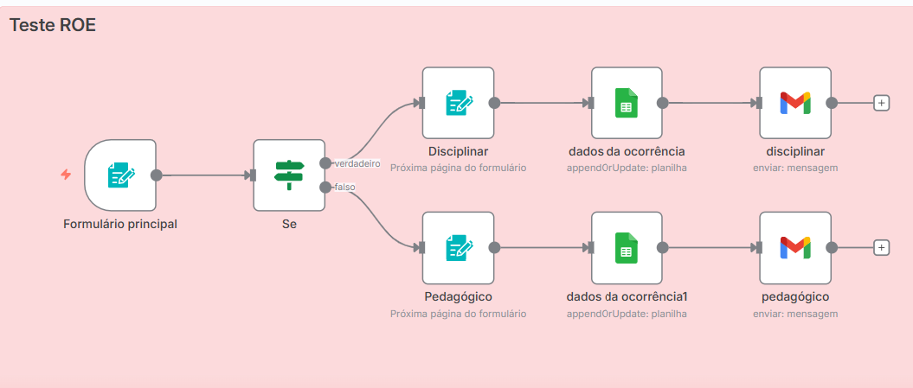
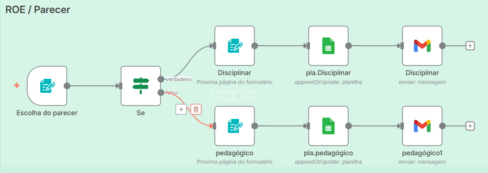

Sistema digital automatizado para registro, categorização e encaminhamento de ocorrências escolares, com notificações e pareceres institucionais integrados.
1. Visão Geral do Projeto
O R.O.E. (Registro de Ocorrência Escolar) foi desenvolvido com a ferramenta n8n para automatizar o processo de registros, notificações e controle de ocorrências disciplinares e pedagógicas dentro da escola.
Registro padronizado de ocorrências escolares
Classificação automática e direcionamento interno
Envio de notificações por e-mail para setores responsáveis
Gestão eletrônica de pareceres e histórico digital

Figura 1: Diagrama do fluxo automatizado do sistema R.O.E.
2. Tecnologias Utilizadas
n8n
Plataforma de automação responsável pela criação do fluxo principal de registros, notificações automáticas e geração de pareceres.
Google Sheets
Banco de dados estruturado do R.O.E., utilizado para armazenar ocorrências, categorias e pareceres de forma organizada e segura.
Gmail API
Responsável pelo envio automático de notificações e alertas institucionais, garantindo comunicação imediata e eficiente.
3. Fluxo do Sistema
O sistema R.O.E. segue um fluxo automatizado que inicia com o preenchimento de um formulário e termina com o envio de pareceres e notificações institucionais.
Registro de Ocorrências
Os professores registram as ocorrências via formulário digital. O sistema identifica o tipo (disciplinar ou pedagógico) e envia automaticamente ao setor responsável.
Notificações Automáticas
O R.O.E. utiliza a Gmail API para enviar e-mails de notificação para direção e coordenação, conforme o tipo de ocorrência registrada.

Figura 2: Fluxo de emissão de pareceres e notificações.
4. Considerações Técnicas
O sistema R.O.E. foi projetado com foco em segurança, automação e escalabilidade. Toda a comunicação é autenticada via OAuth2 e o fluxo modular facilita futuras expansões.
Integrações seguras com APIs do Google (OAuth2)
Estrutura modular no n8n para novas funcionalidades
Armazenamento escalável em planilhas Google Sheets
Automação de notificações e registros de pareceres